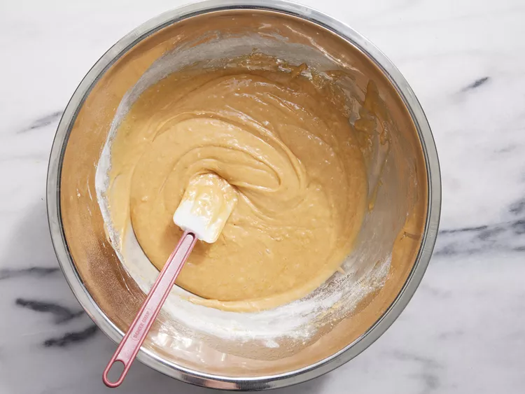

Russian honey cake

Recipe description
This honey cake can be made in three different ways: the hard way, the harder way, and how we're going to do it — the hardest way... Because it's that worth it.
The secret to this cake's fantastic flavor is the tiny amount of bitterness from burnt honey. The slightly tangy whipped cream frosting provides a bit of acidity and lovely light texture, and unlike other frostings, it's not too sweet.
Ingredients
Burnt Honey:
- ¾ cup wildflower honey
- 3 tablespoons cold water
Cake Layers:
- 1 cup white sugar
- 14 tablespoons unsalted butter, cut into slices
- ¾ cup wildflower honey
- 2 ½ teaspoons baking soda
- 1 teaspoon ground cinnamon
- ¾ teaspoon fine salt
- 6 large cold eggs
- 3 ¾ cups all-purpose flour
Frosting:
- 4 cups cold heavy whipping cream
- ¾ cup sour cream
Steps
- Gather all ingredients. Preheat the oven to 375 degrees F (190 degrees C). Line a baking sheet with a silicone baking mat. Place a mixing bowl and whisk in the refrigerator.
- Pour 3/4 cup wildflower honey into a deep saucepan over medium heat. Boil until a shade darker and caramel-like in aroma, about 10 minutes. Turn off heat and whisk in cold water.
- Place a large metal bowl over the lowest heat setting on the stove-top. Add sugar, butter, 3/4 cup wildflower honey, and 1/4 cup burnt honey. Let sit until butter melts, 5 to 7 minutes. Reserve remaining burnt honey for the frosting.
- Meanwhile, combine baking soda, cinnamon, and salt in a small bowl.
- Whisk butter mixture and let sit until very warm to the touch. Whisk in eggs. Keep mixture over low heat until it warms up again, then whisk in baking soda mixture. Remove from heat.
- Sift in flour in 2 or 3 additions, stirring well after each, until batter is easily spreadable.

- Transfer about 1/2 cup batter onto the prepared baking sheet. Spread into an 8- or 9-inch circle using an offset spatula. Shake and tap the pan to knock out any air bubbles.
- Bake in the preheated oven until lightly browned, 6 to 7 minutes. Remove liner from the pan and let cake layer continue cooling until firm enough to remove, 6 to 7 minutes. Invert cake onto a round of parchment paper.
- Repeat Steps 6 and 7 until you have 8 cake layers, letting each cool on an individual parchment round.
- Trim edges using a pizza wheel to ensure they are the same size; save scraps for crumb mixture. Spread any remaining batter onto the lined baking sheet. Bake in the preheated oven until edges are dry, about 10 minutes. Remove from the oven and cut into small pieces; toss with reserved cake scraps.
- Return scraps to the oven and bake until browned, 7 to 10 minutes more. Let cool completely, 15 to 20 minutes.
- Transfer to a resealable bag and beat into fairly fine crumbs using a rolling pin. Set aside.
- Remove the bowl and whisk from the refrigerator. Pour in heavy cream and whisk until soft peaks form. Add sour cream and remaining burnt honey; continue whisking until stiff peaks form.
- Place a cake layer on a parchment paper round on a pizza pan or serving plate. Spread a cup of frosting evenly on top, almost to the edge. Repeat with cake layers and frosting, pressing layers in smooth-side down. Place the last cake layer smooth-side up.
- Frost top and sides of cake. Cover with crumbs; clean any excess crumbs around base.
- Cover with plastic wrap and refrigerate for at least 8 hours to overnight. Transfer to a cake stand using 2 spatulas. Cut and serve.